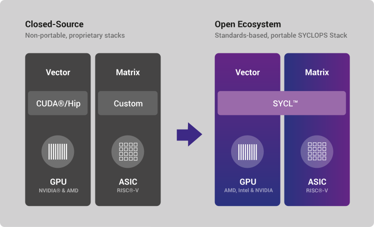

<!-- Section: About -->
<section id="about">
    <div class="wrapper formatted-text">
        <h1><span class="material-icons">auto_stories</span>About</h1>

        <div class="content-and-side-content">
            <div>
                <p>The vision of SYCLOPS project is to enable better solutions for AI/data mining for extremely
                    large and diverse data by democratizing AI acceleration using open standards, and enabling
                    a healthy, competitive, innovation-driven ecosystem for Europe and beyond.</p>

                <p>In order to achieve this vision, SYCLOPS will integrate expertise in computer architecture,
                    programming languages, systems and runtimes, Big Data, High-Performance Computing,
                    autonomous systems, High-Energy Physics, and precision oncology, with the aim of
                    developing novel infrastructure, platform, and application tools for AI acceleration.</p>

                <p><b>This vision relies on the convergence of these important trends in the industry:</b></p>

                <ul>
                    <li>the standardization and adoption of RISC&reg;-V</li>
                    <li>an open Instruction Set Architecture (ISA), for AI and analytics acceleration</li>
                    <li>the emergence and growth of SYCL&trade; as an open, cross-architecture programming model for
                        all types of accelerators, including RISC-V.</li>
                </ul>

                

                <p>The goal of project SYCLOPS is to bring together these standards for the first time in order to
                    demonstrate ground-breaking advances in performance and scalability of extreme data analytics
                    using a standards-based, fully-open, AI acceleration approach, and enable the development of
                    inter-operable (open and vendor neutral interfaces/APIs), trustworthy (verifiable and
                    standards-based hardware/software), and green (via application-specific processor customization)
                    AI systems.</p>
            </div>
            <div>
                <h2>Consortium Members</h2>
                <ul class="styled-list">
                    {% for member in site.consortium_members %}
                    <li>
                        <a href="{{member.url}}" target="_blank" rel="noopener">{{member.name}}</a>
                    </li>
                    {% endfor %}
                </ul>

                <h2>Other Links</h2>
                <ul class="styled-list">
                    <li><a href="https://www.khronos.org/sycl/" target="_blank" rel="noopener">Khronos SYCL</a></li>
                    <li><a href="https://sycl.tech" target="_blank" rel="noopener">SYCL.tech</a></li>
                </ul>
            </div>
        </div>
    </div>
</section>
